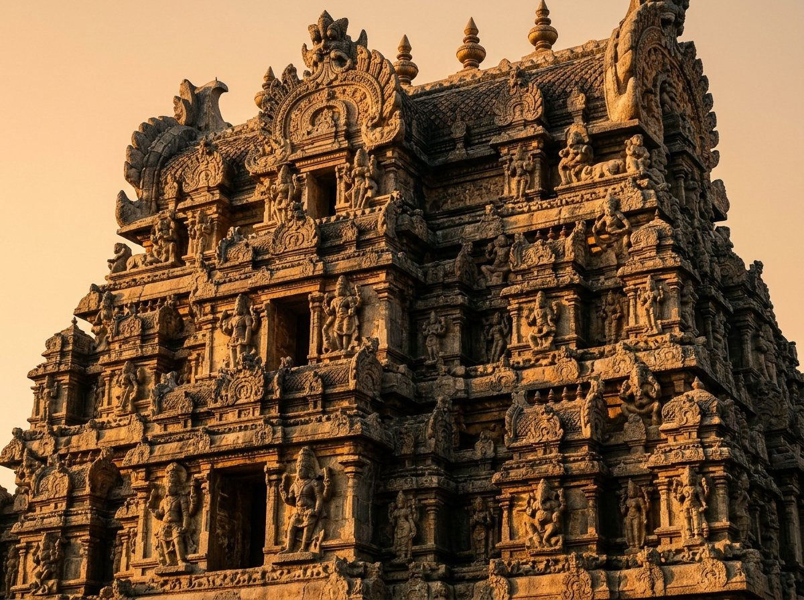
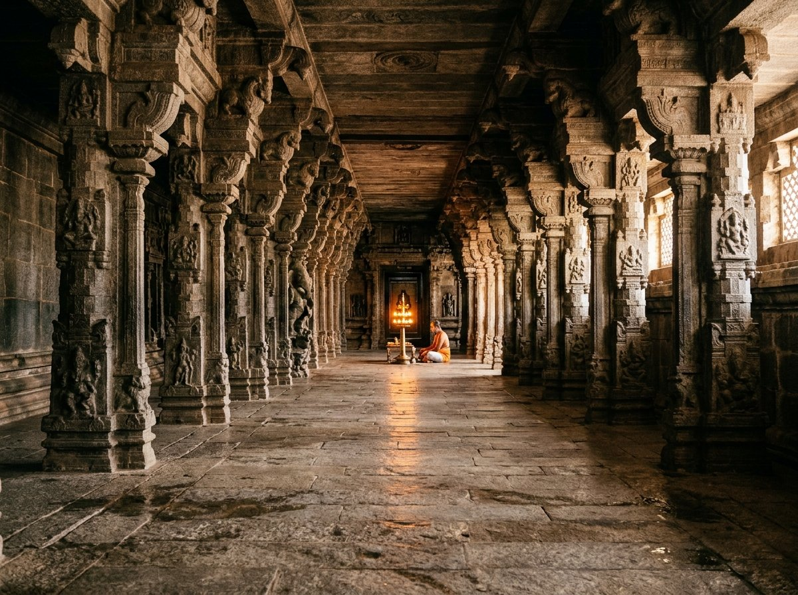

Consecration & Sthala Purana
Rooted in traditional temple architecture and Agama worship practices passed down through dedicated acharyas and artisans.

Learn about the temple’s spiritual traditions, the trust’s responsibilities and its commitment to preserving heritage and serving the community.

Use this section to present the temple’s verified history, presiding deity, sthala purana, architectural heritage, worship traditions and the trust’s governing structure.
Daily rituals, special sevas and festival traditions.
Food service and pilgrim welfare, where provided.
Traditional education and cultural preservation.
Welfare programmes and heritage conservation.
Trace how devotion, classical architecture and public charitable responsibility unite across generations.
Rooted in traditional temple architecture and Agama worship practices passed down through dedicated acharyas and artisans.
Nurturing daily Vedic chanting, classical music, seasonal utsavams and spiritual discourses open to all seekers.
Extending sanctum devotion outward through Annadanam, heritage preservation and transparent community welfare.
The trust commits to clear public records covering registration, trusteeship, audited reporting and heritage conservation work as approved by the governing board.
Publish verified legal trust name, registration number and jurisdictional details prior to launch.
List authorised office-bearers, administrative roles and official correspondence channels.
Share audited income, expenditure and programme utilisation summaries for public review.
Route administration, volunteering and receipt-verification questions strictly to verified contacts.